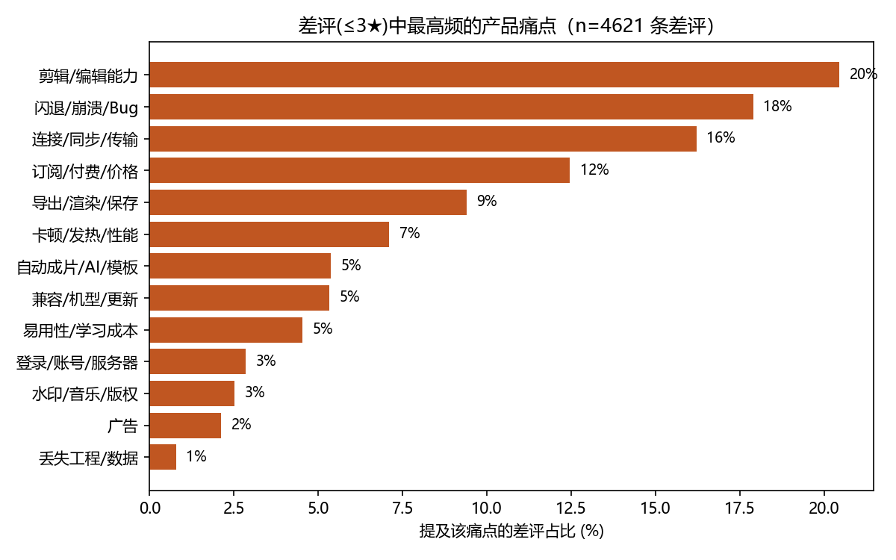
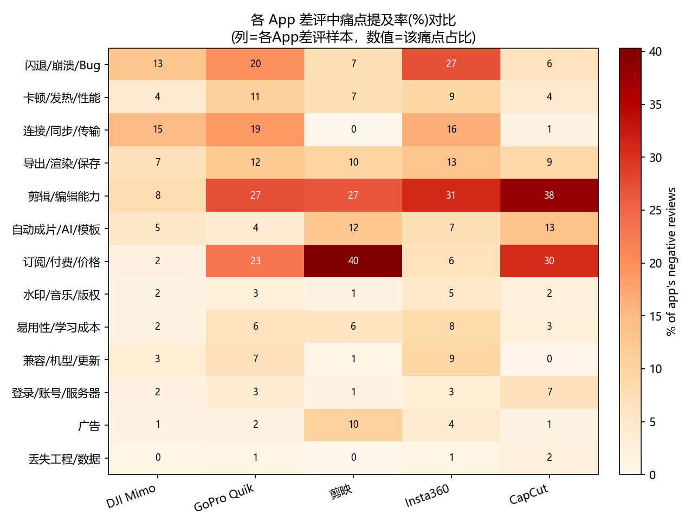
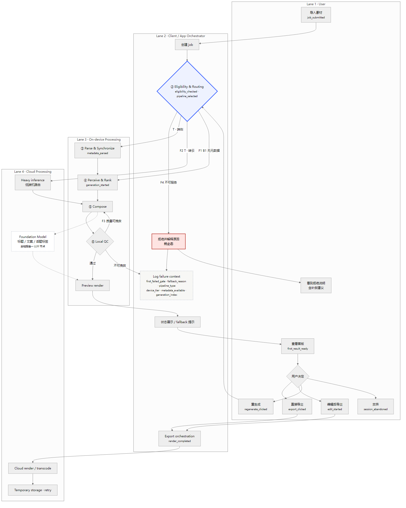

DJI Mimo · AI 一键成片
大疆握着云台电机指令、IMU、逐帧主体轨迹、Highlight 标记和 GPS 速度曲线——这些是纯视觉推断不出来的拍摄现场真值。 但这块能力目前由第三方承担。这份 PRD 论证为什么「元数据 → 剪辑决策」这一层必须第一方自建， 并把「什么算剪砸了」先写成可机械判定的验收，再谈功能。
证据是自己采的：iTunes 公开接口 8,223 条 + B 站官方评论接口 706 条。原始 CSV/JSON 与采集脚本全部留存，可复跑。
差评中「剪辑/编辑能力」占 20.5%，排第一；连接/传输 16.2%，导出/渲染 9.4%。 「拍得多、剪得少、发得慢」这条痛苦链在数据上成立。

更有意思的是反面：剪映 40%、CapCut 31% 的差评在骂收费，DJI Mimo 只有 1.8%。 竞品的付费墙已经激起集中民怨，而大疆软件还没有——这是变现的空位，不是变现的障碍。

B 站那 706 条给出了另一个信号：用户「在大疆拍、却把素材导去剪映/影石剪」。 原话是「既然最后都要用剪映来剪辑…」。工作流在出片这一步断了。
样本边界，写在结论旁边。评论存在自选偏差。DJI Mimo 中国区 App Store 样本只有 50 条， 所以另开 B 站渠道补采——但两个渠道口径不可直接横比。剪映差评分母 154 条， 不与 GoPro Quik 的 1,472 条做百分比横比。「剪辑是最大时间黑洞」缺权威一手量化，故不引用网络流传比例。
纯软件可以从像素反推运镜，但有四类判断它做不了。
| 判断任务 | 纯视觉（CapCut / 光流） | DJI 元数据（ground truth） |
|---|---|---|
| 主动精心运镜 vs 手抖位移 | 像素位移相似，难分意图 | 云台电机指令 + IMU 直接给出 |
| 定位真实速度峰值（燃点） | 只能从画面「看起来快」猜 | GPS/IMU 真实速度曲线，峰值即燃点 |
| 横转竖逐帧跟随主体 | 事后检测，漂移与丢失常见 | 拍摄时已写入逐帧轨迹 |
| 用户意图（哪一刻重要） | 无从反推 | Highlight 标记 = 明确意图信号 |
一句话：大疆的护城河是拍摄当下的意图与物理真值，视觉只能事后猜。 但这句话必须能被检验——所以它在评测里对应一整组判据（见 §04 的 G2）。G2 不过，这句就是空话。
敢砍，比功能齐全更能说明产品判断。
用 Osmo Action 拍完，一键产出一条 30 秒、卡点燃向、带速度仪表盘的竖版高光片。 选这个场景，是因为它同时用满 Highlight + 速度峰值 + 运动模式—— 「视觉做不到、元数据能做到」的差异在这里最强，价值一眼可见。
明确不做：生成式核心引擎、专业时间线编辑器、独立内容社区，MVP 也不追场景广度。
混合素材是高频场景，不是边界态。素材池里常混手机和 GoPro 片段。 做法是以 DJI 素材锚定叙事骨架、非 DJI 素材做视觉降级，确保全程不崩——这一条列为 P0 验收， 因为一旦 DJI 素材占比过低，差异化就坍缩成又一个普通成片工具。

判定用二元 Pass/Fail，不用五分制——平均分没有意义，也接不了 CI 门禁。三组全过才算 Pass。
时长落在 25–35 秒；无黑帧闪帧与相邻重复镜头；切点与节拍网格偏差 ≤ 80 ms；无失焦、过曝、遮挡穿帮。前三项自动判定，第四项 3 人盲评多数决。
速度曲线 Top-3 峰值中 ≥ 2 个落入成片；Highlight 标记片段 100% 入选；有轨迹片段的主体落在竖屏安全框内的帧占比 ≥ 90%。这一组存在的唯一理由，是检验 §02 那个差异化假设。
只问一句：你会不改一帧直接发出去吗？
最有价值的样本是 G1、G2 全过而 G3 判否的那一类。 它说明自动指标选错了——这时该回去改 rubric，不是改产品。 评测标准和产品目标冲突时改哪一边，这是这套体系里最贵的一条判断。
为什么是 84 条而不是 200 条。成片评测每条要人看 30 秒并判 2 项， 人工判定量随条数线性上升。84 条是一个人两天内能跑完整一轮的真实上限。
这是工程理由，不是统计理由。84 条能被执行完，不等于足以检出处理组与基线的差异。
本评测定位为 pilot evaluation。不可写成「N=84，因此具有统计显著性」；
应报告点估计 + 95% 置信区间，样本小则区间宽，如实写宽，不藏。
用护城河建立了差异化，却没把它变成付费理由，是很多方案的断点。
| 层级 | 内容 | 为什么愿付 |
|---|---|---|
| 免费 | 端侧一键成片、基础模板、分享 | 建立「Mimo 出片好」的心智 |
| L1 元数据独有 | 专业级逐帧主体跟随裁切、云端运镜重构、跨多天智能长片 | 拿不到元数据就做不出 |
| L2 | 云渲染、生成式补帧与超分（按量计费） | 重算力、高毛利 |
| L3 | 云存储绑定硬件 | 与大码率素材天然绑定 |
关键取舍：4K 与去水印不作核心付费墙——CapCut 也免费给。 收费点若落在竞品免费的能力上，差异化就无法变现。
写在最显眼的位置，而不是附录。
把限制写清楚不是谦虚，是让上面那些结论有可检验的边界。 一个说不清自己证明不了什么的方案，也说不清自己证明了什么。